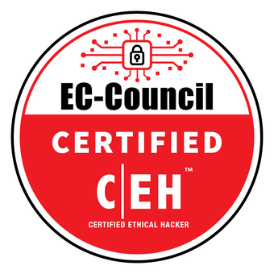

Education
Portland State University
Master of Computer Science
Cybersecurity Graduate Certificate
Planned completion: December 2022
GPA: 3.83
Completed the Master of Computer Science - Graduate Prep Program in December 2021 which included 40 credit hours of undergraduate CS courses.
Related Coursework
- Introduction to Cybersecurity
- Web and Cloud Security
- Malware Reverse Engineering
- Blockchain Development and Security
- Internet, Web, and Cloud Systems
- Unit Testing and Branching Strategies
- Internetworking Protocols
- Introduction to Web Development
- Introduction to Database Management
- Artificial Intelligence
- Machine Learning
Central Washington University
Bachelor of Arts - Math and Science Education
Completed: June 2015
GPA: 3.71
Certifications

In Progress - Planned completion December 2022
Previous Employment
Washougal School District - Science Teacher
- Planned and presented lessons to large groups
- Facilitator for Club 8 Coding afterschool program.
United States Navy - Electronics Technician, Communications
- Clearance: Top Secret (expired)
- Managed cryptographic communications materials
- Maintenance supervisor
- Training coordinator
- Division supervisor
Skills
- Python
- C/C++
- Java
- Kali Linux
- Metasploit
- Wireshark
- Unit Testing